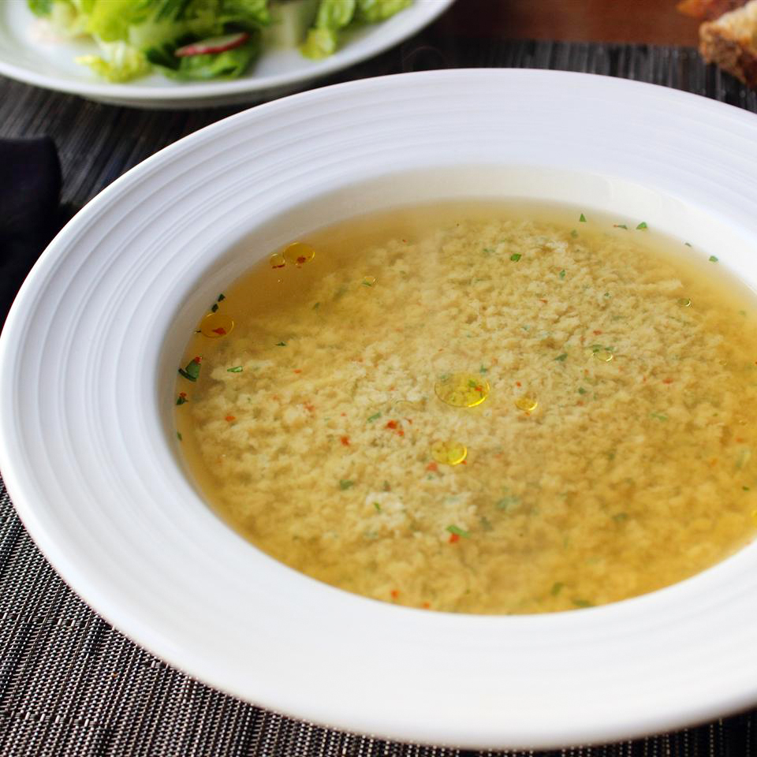

stracciatella

Stracciatella soup. It is chicken broth with egg drop
Ingredients as as follows:
6 cups chicken broth,
salt and freshly ground black pepper to taste,
2 tablespoons semolina flour,
3 large eggs,
2 tablespoons chopped fresh parsley,
½ ounce grated Parmigiano-Reggiano cheese,
½ ounce grated pecorino Romano cheese,
1 pinch cayenne pepper,
1 pinch freshly grated nutmeg,
1 tablespoon olive oil,
1 pinch red pepper flakes
Steps
- ring broth to a simmer in a pot over high heat. Taste broth and adjust salt and pepper as needed.
- GEntly, whisk eggs, parsley, semolina flour, grated Parmigiano Reggiano and pecorino Romano cheeses, salt, pepper, cayenne pepper, and nutmeg together in a bowl until well blended.
- While stirring the simmering broth, slowly pour egg mixture into the broth. Bring mixture back up to a simmer. The liquid will be slightly cloudy initially and clear as broth heats.
- Serve in bowls; garnish with a drizzle of olive oil and a pinch of red pepper flakes.
<